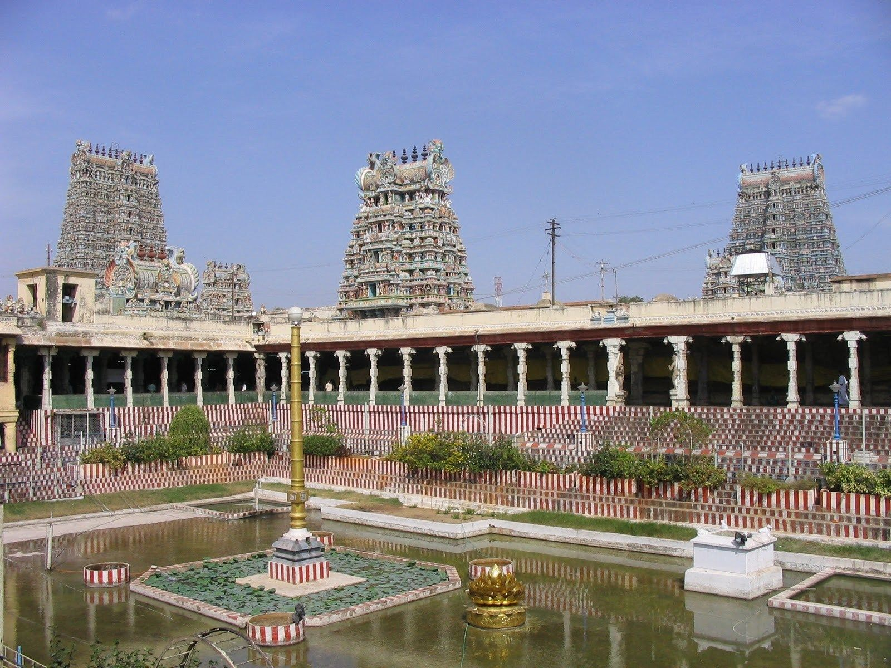

The temple abounds in legends and myths. It is believed that Indra discovered the presence of Swayambhu lingam during his trip through Madurai and he enshrined it. This temple finds mention in ancient texts and was completely devastated in 1310. The temple was restored to its original glory in the 14th century. It is quite an architectural marvel with 14 temple towers with a height ranging between 45-50 metres. A 1000 pillared hall is another major feature with exquisitely sculpted pillars. There are musical pillars which produce sounds of different scales.
A large water tank lies within the temple complex. The magnificent murals on the corridor walls depict the tales from Thiruvilaiyadal puranam. Scores of devotees attend the Thirukalyanam [divine wedding] during the Chithirai Brahmotsavam which is the most celebrated festival at the Meenakshi Temple Madurai. The festival reenacts the holy marriage of deities Meenakshi Devi and Lord Sundareswarar.
The Navarathri festival held during September – October also draws people in huge numbers. The other major festivals are Avani Moolam Festival during August- September and the Masi Mandala Utsavam during February – March. The mandapam hall also functions as a museum featuring antique items, coins, carvings, rare photographs and idols. Eight forms of Goddess Sakthi are featured as sculptures on the pillars of the mandapam. The Meenakshi Naicker mandapam also features sculptures depicting Goddess Meenakshi and Lord Shiva. The Muthupillai Mandapam constructed in 1613 features statues of saints of Tharukavanam.